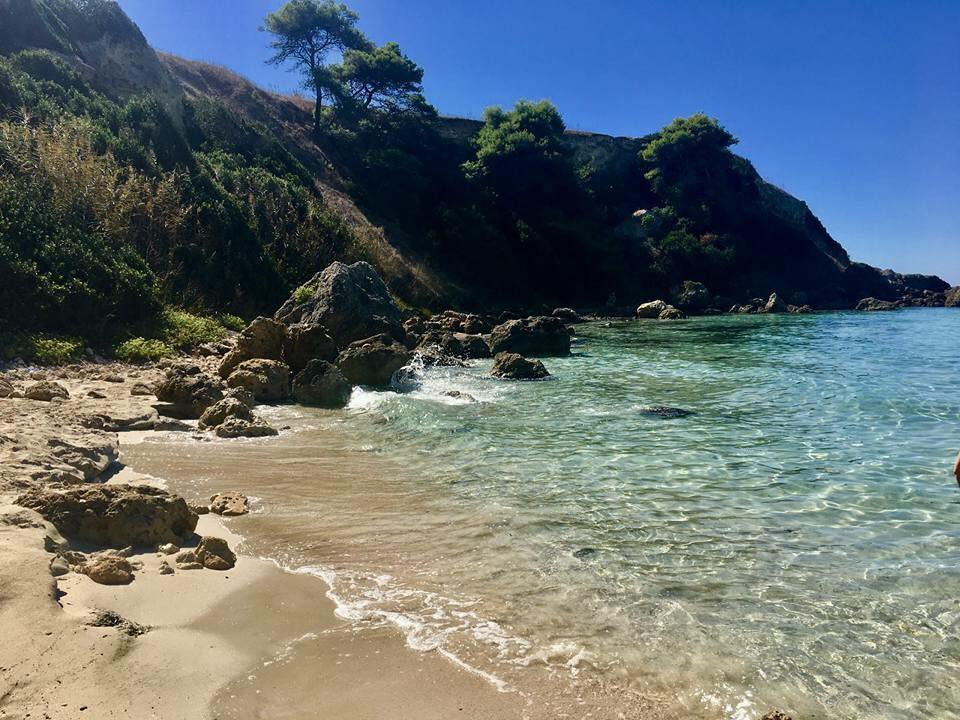
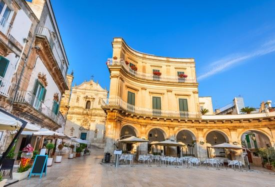
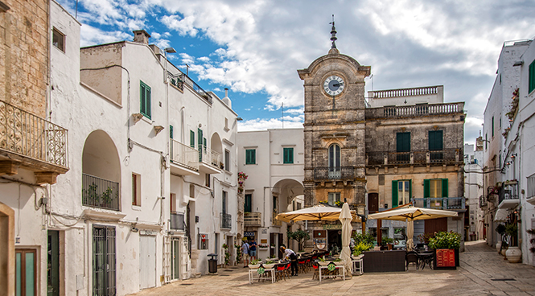

What to visit during the overnight stay?
Marina di Pulsano
- 
-

-

-

-

The area of the Marina of Pulsano is characterized by an alternation of cliffs and sandy coves, the main ones are Luogovivo, La Fontana, Le Canne, Montedarena, Ospedale Capparone (or Villa Verde), Pezzarossa, Serrone, Lido Silvana ( in the gulf there is a rocky island, also reachable by swimming, and on whose beach are still present, albeit in less number than in the past, specimens of cuddle juniper that place their roots in the sand), Terrarossa and Lido Checca (located partly in the aforementioned exclave of the Municipality of Taranto). The area of Marina di Pulsano and the hinterland are particularly well-known among tourists who visit Salento by virtue of the naturalistic, historical and enogastronomic richness that can be experienced in these parts. Its depths are low and indicated for a family type tourism, it is the ideal place to practice snorkeling and underwater activities. The beaches are equipped from a bathing and tourist point of view.
Taranto
-
 Castello Aragonese
Castello Aragonese -
 Ponte Girevole
Ponte Girevole -
 Ponte di Pietra
Ponte di Pietra -
 Monumento al marinaio
Monumento al marinaio -
 Palazzo Prefettura
Palazzo Prefettura
It is called "the city of the two seas", Taranto, washed by the Mar Grande and the Mar Piccolo, with a strategic position that has made it the protagonist of important historical events. The most precious ancient testimonies are kept in the National Archaeological Museum, the MarTa, where it is possible to admire the famous "Ori di Taranto", refined productions of local goldsmith's art between the 4th and 2nd centuries BC, as well as the immense collection of archaeological finds from the entire Ionian province. The history of Taranto runs along the two bridges that connect the old city to the modern one. In addition to the stone bridge built after the 1883 flood, the revolving bridge inaugurated in 1887 continues to have the charm of the great mechanical engineering works and leads into the labyrinth of alleys around the central Via Cava, along which several artisan shops flourish. In this isthmus of land stand noble architectures and churches of different eras and styles such as the Cathedral of San Cataldo at the turn of the Romanesque and Baroque, or that of San Domenico with Gothic features.
Valle d'Itria
-
 Alberobello
Alberobello -

Martina Franca
-
 Ceglie Messapica
Ceglie Messapica -

Cisternino
-
 Ostuni
Ostuni
Trulli surrounded by vineyards and olive groves as far as the eye can see, this is the most authentic face of the Valle d'Itria. The landscape fills the gaze of a timeless magic, in the heart of charming villages such as Alberobello, Martina Franca, Ceglie Messapica and Cisternino.Ostuni looks like a mirage, beautiful on the hill in the plateau covered with olive trees, where the green plunges into the blue of the Ardrial Sea. Just a walk through the alleys to admire the beautiful courtyards and squares framed by white houses, craft shops and restaurants where they cook delicious roasts of meat and tasty seasonal vegetables. Here you live serene, immersed in aromas and flavors of the past .